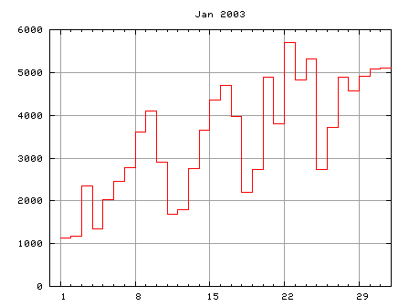

- not so Frequently Asked Questions -
update 2004/11/29
|
|
- not so Frequently Asked Questions - update 2004/11/29
|
Make a graphCount lines in a log-file at a fixed timeFirstly we write a perl program which counts the number of access to a web-site, and makes a figure automatically in an image format like GIF or PNG. This program is executed regularly (once a week or month) to update the figure. Now we extend the webplot.pl program in the previous section. $logfile='/path/to/access_log'; $gnuplot='/path/to/gnuplot'; $imgfile='/path/to/access.png'; We firstly need to know the place (PATH) of some files and gnuplot itself. Those are defined at the top of the program. The name of image file which is made by gnuplot is arbitrary but you'd better to give an appropriate extension. The example above is 'png'.
open(LOG,$logfile);
while(<LOG>){
if(/\.html/){
split;
$day = substr($_[3],1,2);
$mon = substr($_[3],4,3);
$year= substr($_[3],8,4);
$count[$day]++;
}
}
close(LOG);
$day=$#count;
$count[$day+1]=$count[$day];
This part is almost the same as the previous one, but the input is not STDIN but the log file. I also added two variables, $mon, $year, in order to make a title of graph. I hope your log-file is renewed (rotated) every month. In order to draw the last day of a month (31th) with the histgram, we added the last element of $count, and that is the same as one before.
& make_gnuplot;
open(GNUPLOT,"| ".$gnuplot);
foreach $i (0..$#plot){ print GNUPLOT $plot[$i]; }
for($i=1;$i<=$#count;$i++){
printf(GNUPLOT "%10d%10d\n",$i,$count[$i]);
}
print GNUPLOT "end\n";
close(GNUPLOT);
exit 0;
This part make a figure of the number of access. Commands given to gnuplot are stored in the array $plot, which is prepared in the next subroutine.
sub make_gnuplot{
$i=0;
$plot[$i++]=sprintf("set term png color\n");
$plot[$i++]=sprintf("set output '%s'\n",$imgfile);
$plot[$i++]=sprintf("set size 0.7,0.7\n");
$plot[$i++]=sprintf("set xrange [0:31]\n");
$plot[$i++]=sprintf("set yrange [0:*]\n");
$plot[$i++]=sprintf("set xtics 1,7,31\n");
$plot[$i++]=sprintf("set mxtics 7\n");
$plot[$i++]=sprintf("set nokey\n");
$plot[$i++]=sprintf("set grid\n");
$plot[$i++]=sprintf("set title '%s %s'\n",$mon,$year);
$plot[$i++]=sprintf("plot '-' with step\n");
}
Here our image format is PNG. The lines set size and set xtics change its appearance. The default size of PNG is 640x480 pixels, and this is reduced by 70%. The last line means that numerical data to be plotted come from STDIN. With this technique you can make a graph of $count without any temporary files. This script is invoked by 'cron' once a week, for example, to make a graph of access. 
 |